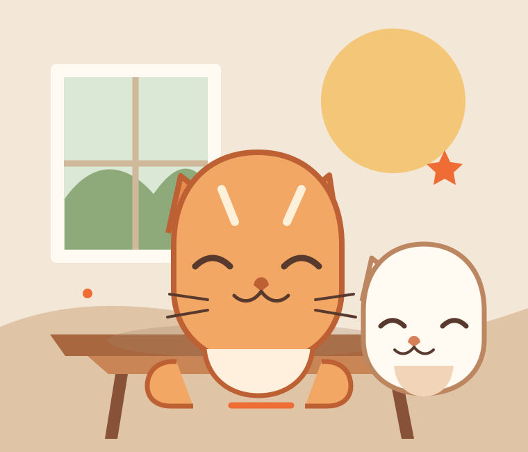

人氣私房料理
以溫暖美味為餐桌主角，實際菜色與供應內容待店家確認。
A MEAL WITH CATS
專為貓咪愛好者打造的溫馨同餐空間，讓每一頓飯都多一點療癒與愛。
品牌標語：與貓咪共進溫暖美味食光・支持愛心領養

WELCOME TO OUR PLACE
A LITTLE MORE LOVE
以美食、友善陪伴與領養支持，描繪人貓共好的日常。
以溫暖美味為餐桌主角，實際菜色與供應內容待店家確認。
為貓咪準備合適餐點的構想；品項、成分與餵食方式待確認。
認識店貓與浪浪，支持以尊重和責任為前提的愛心領養。
以上為依網站大綱撰寫的示範文案；實際餐點、店貓與服務內容待店家確認。